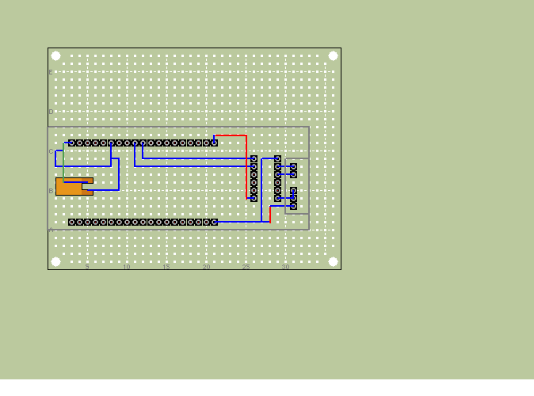
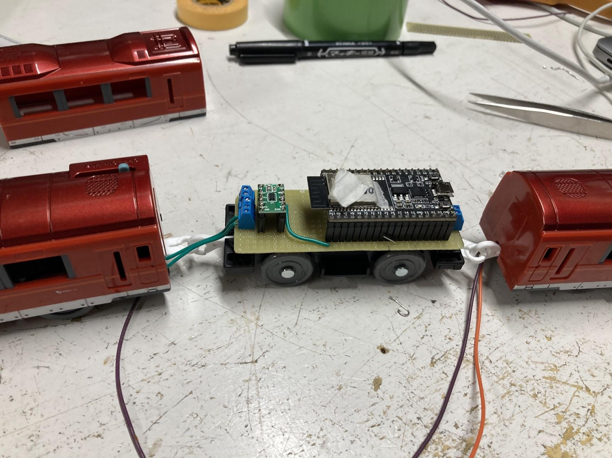

このドキュメントは何なのか
このドキュメントはプラレール企画についてのシステムだったり技術だったりの情報をまとめるために作りました。 ドキュメントを残すことで後輩への引き継ぎや初めて参加する人への説明をやりやすくしようという目的があります。 なのでみなさんドキュメントを書いていってくださいね。
プラレール企画とは
プラレール企画は2020年の調布祭から始まった、プラレールを制御してみようという企画です。 やっていることは毎年少しずつ違っていますが、主にはポイント制御、車両の速度制御などを行っています。
2023年のプラレール企画の予定
2022年のプラレール企画が諸事情で爆散したので、2023年は2022年でのプラレール自動制御などを引き続きやっていくことになると思います。
また、システム構成についても見直して作り直そうということになっています。
アーキテクチャ
2023.07.09時点での最新版のアーキテクチャ
flowchart RL subgraph 状態管理 管理画面 <-->|"connect-web"| StateManager EventHandler <-->|"connect"| StateManager StateManager <--> DB1[(state_db)] end subgraph 自動運転 TrainController <--> StateManager DiagramManager --> PathPlanner PathPlanner <--> TrainController DiagramManager <--> DB2[(diagram_db)] DiagramManager <-->|"connect-web"| 管理画面 end subgraph 映像配信 Webカメラ --> |"USB"| 配信サイト ESP-EYE -->|"mjpeg"| 配信サイト 配信サイト -->|"WebRTC"| SkyWay SkyWay -->|"WebRTC"| 管理画面 end subgraph エッジデバイス StateManager <-->|"MQTT"| Servo Sensor -->|"MQTT"| EventHandler end
自動運転
昨年度は実装できなかった部分であるので、1から実装をする必要がある。 アルゴリズムの実装に関してはすでに#7にて議論している。路線の状態をグラフとして管理をする。 アルゴリズムにデータを渡すために色々をしなくてはいけないので、その部分に関しては別途実装する。
管理サイト
基本的にやりたいこととしては去年のサイトと同じだが、今回は状態を同期するためのプロトコルとしてconnect-webを採用したい。また、プラレールのレイアウトが微妙に変化することが予想されるのでフロントエンドの調整（SVG手打ち芸）が必要だが、可能ならこの部分を簡単にできるとなおよい。
状態管理
これまでとは異なるアーキテクチャで、列車の状態管理をモダンなIoTのアーキテクチャに近づけていきたい。 AWS IoTやAzureなどで利用されているアーキテクチャを模倣する感じで、MQTTでエッジの端末と通信してIOの状態の対応付けをバックエンド側で行うようにする。この部分は正直なところ、MongooseOSなどの既存の仕組みがあるが余裕があれば独自実装したい。 これまでは、KVSで管理していたがPodが死ぬと状態が失われるためアーキテクチャとしてはあまり良くない。 今回はアクセス頻度などを考慮して、MongoDBなどのNoSQLなDBで状態管理を行いたい。
列車検知
これまでのホールセンサーやCdSでは読み飛ばしが多くあった。今回はそうしたデータの読み飛ばしをなくすために、マイクロスイッチを用いた列車の通過検知と、列車が駅に停車した際にNFCタグを用いて列車を識別するような仕組みを実装したい。 基本手にはハードウェア側で大規模な処理をするわけではなく、イベントをhttp経由で通知してくれれば良い。（MQTTを採用するメリットは薄いような気もするがプロトコルの検討は必要かも）
ポイント・ストップレール制御
昨年度と同様にESP32にサーボモータを接続して制御を行うことを検討している。 昨年度からの違いとして、MQTTでブローカーと接続してあげることで現地会場でのサーバー構築作業がなくなるので良さそうかなと思っている。httpよりも薄い感じのプロトコルらしく、普通にESPで問題なく動きそう。 ベースとなるコードはあるものの、実装が大きく変わるのでソースコードの変更は必要。
カメラ配信
昨年度と同様にしてSkyWayを用いた映像中継を検討している。 車載カメラにはESP-EYEを採用してmjpegなどで受け取った映像を配信用PCからSkyWayに流すことを検討。 旧SkyWayがサービス終了するらしいので実装の変更は必要かもしれない。
自動運転システム
flowchart TD subgraph 自動運転 TrainController <--> StateManager DiagramManager --> PathPlanner PathPlanner <--> TrainController DiagramManager <--> DB2[(diagram_db)] DiagramManager <-->|"connect-web"| 管理画面 end subgraph 状態管理 管理画面 <-->|"connect-web"| StateManager EventHandler <-->|"connect"| StateManager StateManager <--> DB1[(state_db)] end
用語
プラレール企画で利用する用語の定義を説明する。
ここには2つのレイヤが存在し，列車の走行位置や閉塞の状態をグラフとして管理している仮想レイヤと，実際のプラレール上のストップレールのON/OFFやセンサーの情報を扱う物理レイヤが存在する。
それぞれのレイヤは完全に独立して機能して，物理レイヤの状態は仮想レイヤによって決定され，仮想レイヤの状態の更新は物理レイヤからの情報によって行われる。
仮想レイヤの用語
-
閉塞
現実の鉄道システムからの用語。鉄道の線路を区切る単位。閉塞内には一つの列車しか存在できない。閉塞内に列車が存在する状態を閉，存在しない状態を開という。 -
閉塞グラフ
閉塞の関係を表現した有向グラフ。閉塞をエッジ，駅をノードとして表現する。 閉塞が閉となっている区間はエッジが存在せず，閉塞が開となっている区間はエッジが存在する。また，各ノードは駅の情報以外にその駅に停車している列車の情報を持つ。
上り線と下り線は別々のノードとして定義して一周するようなグラフであり，あるノードからあるノードへのパスが必ず存在する。 -
列車番号
それぞれの列車に対して一意に割り当てられる番号。列車の識別に用いる。
列車IDは各列車に貼り付けられるNFCのIDと一対一対応する。 -
駅のCapacity
駅に停車できる列車の数を示す。駅に存在するプラットフォームの数と一致する。
物理レイヤの用語
-
構内閉塞
駅に2つ以上のプラットフォームが存在する場合，その駅の閉塞は構内閉塞となる。構内閉塞は駅のCapacityと一致する。なお，構内閉塞は閉塞グラフには含まれない。 -
ストップレール
プラレールにおいて列車を停止させるために利用する特殊なレール。ストップレールのON/OFFを切り替えることで列車を停止させることができる。 -
NFCタグ
プラレールの車両に貼り付けるIDタグ。それぞれのタグには8byte?のIDが割り振られており，このIDと列車の番号の対応付けを行うことで列車の識別を行う。 -
NFCリーダー
プラレールにおいてNFCタグのIDを読み取るために利用するリーダー。それぞれのストップレールの下に設置しており，列車が停止したときにNFCタグのIDを読み取ることができる。 -
通過検知センサー
プラレールにおいて列車の通過を検知するために利用するセンサー。センサーのON/OFFを切り替えることで列車の通過を検知することができる。物理的にはマイクロスイッチを用いる。 -
ESP32
サーボモータの制御やNFCリーダー，通過検知センサーの制御を行うために利用するマイコン。Wi-Fiを用いて通信を行う。 -
サーボモータ
プラレールのストップレールを制御するために利用するモータ。指示をした角度へ回転する。
それぞれのサービスの機能
StateManager
現在の状態を管理するためのサービス。状態をデータベース上に保存して，他のサービスや管理画面からの要求に応じて状態の更新と取得を行う。
物理レイヤの状態と仮想レイヤの2つの状態を管理する。
DiagramManager
列車の目的地を決定するサービス。列車ごとに運行情報を管理して，TrainControllerからの要求に応じて目的地を返す。
PathPlanner
列車の経路を計算するサービス。経路情報のグラフを元にして，DFSによって現在の列車の位置から目的地までの経路を算出して返す。
TrainController
列車の運行を管理するためのサービス。列車の運行を管理するために必要な情報をStateMangerから取得して，PathPlannerによって計算された経路を元にして列車の運行を制御する。
EventHandler
列車が通過した場合と停車中の列車からNFCタグのIDを読み取った情報をMQTTを通して受け取り，その情報を元にしてStateManagerに対して状態の更新を要求する。
管理画面
現在の状態を確認するための管理画面。StateMangerから状態を取得して表示する。
また，DiagramManagerに対して運行情報の更新を要求することができる。
自動運転アルゴリズム
列車は以下のようなアルゴリズムに沿って自動運転を行う。
概要
全ての列車の位置と閉塞は以下のようなグラフによって管理される。
flowchart LR; A["A(1)"]-.-|2|B; B["B()"]-->C; C["C()"]-->D; C-->E; D["D(3)"]-->C; E["E()"]-->C; C-->B; B-->A;
それぞれのノードが駅，エッジが閉塞を表している。
なお，これ以外に列車は以下のような状態を持つ。
- 列車の位置
- 列車のPriority(列車の種別のようなもの)
- パス(列車が通るべき経路でノードのリスト)
Priorityは0から始まる整数で，値が小さいほど優先度が高い。
PathPlanner
ある列車の現在の位置と目的地を受け取り，その列車が目的地に到達するためのPathを返す。 PathPlannerはDFSによってグラフを探索して，目的地に到達するまでに通る全てのノードのリスト(Path)を返す。
TrainController
グラフ上の各ノード対して以下の処理を行う。
なお，この処理はPriorityが高い順番に行う。
flowchart TD
idstart{{"開始"}}
idstart --> id0{{"Nodeに列車は存在するか?"}}
id0 -->|yes| idQ{{"現在の駅のNodeをPathから削除する"}}
idQ --> id
id0 -->|no| idend{{"終了"}}
id{{"列車のPathの長さは0か？"}}
id -->|yes| id1{{"DiagramManagerから次のPathを取得する"}}
id1 --> id6
id6{{"Pathを取得できたか?"}}
id6 -->|no| idend
id6 -->|yes| id7{{"Pathを列車にセットする"}}
id7 --> id2
id -->|no| id2{{"Pathの最初のNodeを取得する"}}
id2 --> id3{{"次の目的地までのEdgeは存在するか？"}}
id3 -->|yes| id4{{"次のNodeまでのEdgeを削除する"}}
id4 --> id5{{"Nodeから列車の情報を削除する"}}
id5 --> idend
それぞれの操作と条件について説明する。
Nodeへの列車存在確認
列車が存在しないNodeに対しては処理をする必要がないので，呼び出された時点で終了する。この処理を実現するために，Nodeは停車している列車のIDを持っている。
Path
列車には列車が通るべき経路(パス)が設定されている。列車があるノードに停車した際には，現在停車しているノードをパスから削除して次に停車すべきノードをパスから取得する。
これを毎回のノードで実施することによって，最終的に列車は目的地に到達することができる。目的地に到達した時点でPathの長さが0となるので，DiagramPlannerへ問い合わせを行う。
Edge
現在のノードから次のノードまでのEdgeは1意に定まる。列車はこのEdgeを通らないと次のノードに到達することができないため，駅から発車するためにはこのEdgeが存在する必要がある。
Edgeが存在して，列車が発車しようとする際にEdgeを削除するが，この操作には以下の特例がある。 Priorityが0の列車はさらに次のノードへのエッジも消す。つまり2つのエッジを削除する
ただしこの操作を行うには以下の条件がある。
- 中間の駅のCapasityが1より大きいこと
この条件を満たさない場合は，通常通り1つのエッジを削除する。
DiagramManager
列車の目的地を管理するサービス。 それぞれの列車の目的地を状態として管理しており，TrainManagerからの要求に応じて目的地とPriorityを返す。
それぞれの列車に設定されているPriorityと目的地は管理画面から設定できる。また，それぞれの目的地とPriorityは優先順位付きのQueで管理されている。
基本的には折り返しが可能な2区間での往復運転を行うように設定されることを想定している。ただし，物理的な制約として折り返しができるのは終点のみである。
車両の取り出しに関して
車両の取り出しに関しては，以下のような処理を行う。
今回のレイアウトでは車両基地を設けず，駅に停車している任意の列車を取り出してレイアウトから外すことができるようにする。
レイアウトから取り出した車両は，別に用意しているNFCリーダーに車両のIDをかざして，システム上から対応する列車に対して以下の処理を行う。
- 当該列車によって削除されているEdgeが存在する場合は，そのEdgeを復元する
- 当該列車のPathに停車すべきNodeが残っていた場合は，Nodeを全て削除して列車のPathをNULLにする
これにより，どのような状態であっても車両を取り出すことができるようになる。
また，取り出しやすくするためにDiagramPlannerにおいてある駅で停車するという指示もできるようにしておく。
ソフトウェア
under construction
アルゴリズム
プロトコル
under construction
Protobuf
ハードウェア
under construction...
ラジコン
ラジコンに関してはTWILITEを用いた速度制御を行うことで安定性の向上を目指したい。 基盤に関しては昨年にスバル君が作ってくれたものがあるので、今回はこれを基盤におこして小型化を目指したい。 また重心問題にも対応できるなら尚良い。
レイアウト
2023.07.11現在のレイアウト案は以下の通りです。
flowchart LR shinjyuku["新宿(1)"] sakurajosui["桜上水(2)"] syako["車両基地"] chofu["調布(2)"] hashimoto["橋本(1)"] hachioji["京王八王子(1)"] syako --> chofu shinjyuku --> sakurajosui sakurajosui --> shinjyuku sakurajosui --> chofu chofu --> sakurajosui chofu --> hashimoto hashimoto --> chofu chofu --> hachioji hachioji --> chofu shinjyuku --> syako
flowchart LR s0 --> sa0 sa0 --> ch0 ch0 --> ha0 ha0 --> ha1 ha1 --> ch1 ch1 --> sa1 sa1 --> s1 s1 --> s0 ch0 --> hac0 hac0 --> hac1 hac1 --> ch1 s0 --> pool pool --> ch0
必要なレール一覧
公式サイトを参考に必要なレールを検討。
レール一覧
| コード | 商品名 | 必要本数 | 単価 | 個数 |
|---|---|---|---|---|
| R-01 | 直線レール | 12 | 300(4本) | 3 |
| R-03 | 曲線レール | 4 | 302(4本) | 1 |
| R-04 | 複線直線レール | 21 | 635(4本) | 6 |
| R-05 | 複線曲線レール | 10 | 587(4本) | 3 |
| R-06 | ニュー坂レール | 4 | 573 (2本) | 2 |
| R-08 | ストップレール | 15 | 507(2本) | 8 |
| R-10 | Uターンレール | 3 | 582 | 3 |
| R-11 | ターンアウトレール | 4 | 330(2本) | 2 |
| R-15 | 複線幅広ポイントレール | 12 | 540(2本) | 6 |
| R-24 | 複線わたりポイントレール | 2 | 577(2本) | 1 |
| R-28 | 複線ターンアウトレール | 2 | 786(2本) | 1 |
| J-14 | ブロック橋脚 | 12 | 669(6個) | 2 |
| J-22 | 複線ブロック橋脚 | 6 | 840(6個) | 1 |
合計金額
ヨドバシ.comにて見積もりをした結果，合計金額は￥20,766となった。(見積書)
2022年プラレール企画
2022年のリポジトリはこちら
2022年のシステム構成図
今年度のシステム構成図を以下に示します。
昨年度のプラレール企画のアーキテクチャを引き継いで今年度に新たにいくつかの機能を追加した形になります。今年度新しく追加した部分は次の通りです。

レイアウト
今年度のレイアウトを以下に示します。今年度は教室の関係で、昨年度よりも少し狭いレイアウトになりましたが、スペースを上手く活かして京王線を再現しました。

いくつか路線がありますが京王線がシステムによる遠隔制御路線で、そのほかの中央線や環状線はラジコンが走る専用路線を担っておりポイントやストップレールの制御は行なっていません。
桜上水に待避線を用意して通過待ちを可能にしたり、調布駅を立体交差化したりと工夫しています。新宿駅のホームがなんで2つなんだ！というツッコミもあるかと思いますが、そこはバーチャル京王線ということで。
昨年度の反省（昨年は岩本町駅のように1つのホームに両方向の列車が来るようなパターンが存在していたためポイントの状態管理で組合せ爆発したり、列車が正面衝突する事故が多発しました）を生かして、ソフトウェア設計が難しくならないように物理的に調整したレイアウトになっており、列車が必ず一方通行に流れるように工夫しています。
プラレールに関しては、鉄道研究会から貸していただきプラレールの車両に関してはラジコン車両は主に工研で用意しました。
状態管理
IoTシステムの基本的な機能である状態管理を担っているのが、externalとinternalの2つのサービスです。ここら辺のシステムは昨年度のものをそのまま引き継いでいます。
IoTシステムにおける状態管理について簡単に説明すると、システム上の状態と現実のハードウェアの状態を一致させるということです。例えば最近よくあるようなスマホから電気をON/OFFできるようなライトがあった時に、サーバー上ではライトの現在の状態(ライトがついているのか消えているのか)を保持しており、スマホからライトを消すという指示がくるとサーバー上の状態を更新するとともに、現実のライトもOFFにします。もし状態管理がうまくいっていないと、システム上だとライトが消えているのに現実のライトは点いているというような事態に陥ってしまうのでとても重要な部分です。
また、この状態管理によってシステムの状態とハードウェアの状態が一致していることが保証されていると、ソフトウェアではより抽象的にハードウェアを扱うことが可能になります。
さて、今回のシステムではexternalがポイントとストップレールの状態をKVS(Key Value Store)で保持しています。このexternalの状態が変化するとその変化がinternalを介してサーボを制御するESP32に伝わることで現実世界のポイントが動きます。たとえば、sakurajosui_b1というストップレールをONにすると、
- ストップレールをONにするボタンが押される
- クライアントからexternalのAPIを叩く
- externalで状態(ON/OFF)を更新して、操作するポイントの名前と状態をinternalへ伝える
- externalから渡された状態に基づいて、そのポイントを管理するESP32に対してサーボの角度を指定するAPIを叩く
- ESP32で指定された角度にサーボが動き、ストップレールが動く
というような流れになっておりそれぞれで抽象化されているので、上から下へ流れるにつれてレイヤが下がっていくイメージです。
実装的な面で言うと、externalとinternalはそれぞれgolangで実装され、gRPCを用いて話すようになっており、フロントエンド側からはJSON形式のhttpでリクエストを受けつけるようになっています。ここら辺もconnectとかを使ってprotobufを使うように統一できると良さそうですね。
また、internalのサーバーはESP32と同じネットワーク上に存在しており、ESP32に固定IPを割り振ってそのIPアドレスをinternal側で管理することで実装しています。最近のIoTシステムだと、ESP32から直接クラウド上のサーバーにアクセスして状態の変更を監視するみたいなパターンが多いので少し特殊かもしれません...?
MongooseOSとmDashを使ってクラウドにするぞー！という計画はあったのですが、接続できる台数の制限があったり、1からこの部分のコードを書き直していると他の部分が追いつかないなどがあったので断念しました...。もし次回があればそこらへんも挑戦してみたいです。
自動運転
今年度の大きな新たな取り組みの1つが列車の自動運転です。
色々な方法があるので非常に悩んだ部分です。計画当初は、列車の位置をホールセンサーを用いて把握して、その位置に基づいてポイントを切り替えるようなシステムを想定しており、ポイントと列車の状態の管理に悩んででいました。
そんな中、Maker Fair Tokyoに訪れた際に「東京大学プラレーラーズ」さんという団体がまさにプラレールの自動運転を行なっていたので色々とお話を伺っていたところ、コラボのお誘いを受け調布祭でのコラボが実現しました。

調整を行ったところ現在工研が開発しているシステムと組み合わせることが可能と言うことがわかり、プラレーラーズさんが実装した自動運転システムをauto operationとして組み込みました。
自動運転の仕組みについて
システムの詳細に関しては、プラレーラーズさんの資料やコードを参考にしていただきたいですが簡単に。
自動運転システムでは、配線図に示しているchofu_b5のようなストップレールとホールセンサーからなる閉塞区間によって列車の位置を管理しています。プラレーラーズさんによるシミュレーションの画面のような感じです。列車ごとにダイヤを設定しており、それの列車の位置に応じてポイントとストップレールの切り替えを行っているようです。

プラレーラーズさん側のシステムと工研のシステムでは扱っている情報や処理が異なるのですが、インターフェース部分や内部での値の取り扱いを工夫することによって連携を行っています。
ホールセンサーは、プラレールの車両の底の部分に取り付けられたネオジウム磁石の磁気を検知するセンサです。このセンサを用いることによって、列車がセンサーを通過したことを検知しています。検知したということを、jsonフォーマットのhttp経由でjson2grpcに送信してサーバーでgRPCに変換してauto operationに通知を行うようになっています。
管理サイト
昨年は完全オンライン開催だったため、観客側がポイントを遠隔で操作するために操作用のサイトを用意していました。しかし、今年度は対面開催かつ自動運転であるため基本的に来場者がポイントを操作することはありません。そのため、メンテナンスとモニタリング用にポイント・ストップレールの状態の確認と把握、カメラ映像の確認ができるサイトを構築しました。


管理画面の上部には、会場の各駅ごとに設置されたWebカメラの映像が投影されており一括して状態を確認することができます。画面下部では、現在のレールの状態が表示されています。
それぞれの信号がストップレールと対応しており、クリックするとストップレールのON/OFFが切り替わります。また、分岐になっているところをクリックするとポイントが切り替わります。
フロントエンド側とexternalのサーバー側とでWebSocketにて通信を行なっており、リアルタイムで状態の反映が行われるようになっています。
また、路線上で赤色にハイライトされている部分は閉塞区間が閉になっている部分で、その区間内に列車が存在することを示しています。
フロントエンドの実装は、Next.jsで行っています。昨年度のプラレール企画のものをベースとして今年度のレイアウトへの反映や調整を行いました。
画面下部の状態表示の部分はSVGを直接書き換えて実装しており、ReactでSVGをwrapするComponentを作成して下のように全てのパーツを座標指定して配置してあります。（手打ちで全部の座標を打ち込むのはなかなか辛かったのでツールで自動化したいです...）
<Rail
// hachioji_b2
positions={[
{ x: 120, y: 40 },
{ x: 300, y: 40 },
{ x: 300, y: 500 },
]}
trains={[]}
isClosed={blockState["hachioji_b2"]}
/>
カメラ配信
車載カメラ配信
ESP-EYEというマイコンボードを一部のラジコン化したプラレールの先頭に取り付けており、車両からの映像を見られるように実装を行いました。ESP-EYEは、小さいながら単体でWi-Fi接続できてWebカメラとして利用することができる便利なボードです。
今回はプログラムとしてesp32-cam-mjpegを利用したのですが、これはESP-CAM側でストリーミングサーバーを建ててそこにアクセスするとmjpeg形式で動画がストリーミングされるというものです。そのため、単体ではWebRTCに直接配信できないので、canvasに描画されたmjpegをcaptureしてstreamを生成して、そのstreamをSkyWayに配信する配信用のサイトを構築して配信を行いました。これにより、ESP-CAMに接続されるクライアントが1つに限定されることでESP-CAMへの負荷も軽減されています。

Webカメラ配信
会場内の各所に設置されたWebカメラから各駅の現状を配信するために、SkyWayを用いて配信サイトを構築しています。仕組み自体は単純で、会場内にWebカメラとノートパソコンを設置しておき、配信用のサイトから駅ごとに固定のRoomIdで入室してカメラ映像の配信を行っています。
インフラ
externalやinternalなどのサーバー群はすべてKubernetes基盤上にデプロイされます。Fluxcdを用いてGitOpsを実現しており、GitHubにてmanifestsを管理しています。
また、GitHub Actionと組み合わせてCI/CDを行っておりdeploymentのbranchにmergeされるとイメージがビルドされます。イメージの更新を検知するプログラムが走っているため、自動的にデプロイが更新されるようになっています。

インフラの物理的な構成の概略を図に示します。
ここでは大きく、現地会場であるA402教室と多摩川DCに分かれています。現地会場では、デスクトップPCを配置しており、UbuntuのVM上でk3sを動かしています。多摩川DCは、20のごっちさんに提供していただいた自宅サーバー環境です。基本的にESP32と同一ネットワーク内に存在する必要があるinternalを除いて、externalやフロントエンド、auto operationなどはすべて多摩川DCに配置されています。
A402側でinternalサーバーをホスティングするために、大学に申請してグローバルIPを提供していただき、教室に設置したRTX1210をルータとしてネットワークを構築しています。
大まかなインフラ構成自体は昨年のプラレール企画とあまり変わっていないので、詳しくは昨年度のプラレール企画の記事やごっちさんのブログを参考にしていただければ幸いです。
プラレールラジコン化計画
プラレールって？
プラレールとは古来より男児たちを中心に遊ばれている電車の形状をした玩具である。JR、私鉄を含む 豊富な車両があり、果てにはモノレールのプラレールも存在する。そんな男児なら一度は触ったことがあるであろうプラレール、その構造は実にシンプルなものだ。 電源を入れたらモーターが回転し電車がただ走り出すというものだ。端的にいえば前に走るだけであり、その動作は本来制御不能。しかし今回科学の力を用いてプラレールの速度制御を遠隔で行い、ラジコン化させる。
製作における要件定義
今回ラジコンプラレールの製作に当たって以下三つの要件を定めて開発を行った。
- 実機コントロールを用いて無線でプラレールをスムーズにリアルタイムで速度制御する。
- 改造の際、プラレールの外見を損なわないように部品を内部に収める。
- 量産しやすいようシンプルな構造にする。
そのため最終的にはラジコンプラレールを量産、調布祭で展示及びユーザーによる運転ができるようにする予定である。

ラジコンプラレールの大まかなシステムは以下の通りである。主にコントロールを担う送信側と、送られてきた 値を元にモーターを制御する受信側に分けられる。間の通信にはBluetoothを用いる。これによりある程度遠くから 運転を行うことが可能になり、消費電力も抑えることができる。
ハードウェア
使用部品
- タカラトミー TAKARATOMY S52 [プラレール 小田急ロマンスカーGSE70000形]
- ＥＳＰ３２－ＤｅｖＫｉｔＣ ＥＳＰ－ＷＲＯＯＭ－３２開発ボード×2
- DＤＲＶ８８３５使用ステッピング＆ＤＣモータドライバモジュール | ＤＲＶ８８３５使用ステッピング＆ＤＣモータドライバモジュール
- ターミナルブロック ２．５４ｍｍ ２Ｐ 青 縦 | ターミナルブロック ２．５４ｍｍ ２Ｐ 青 縦
- ピ分割ロングピンソケット １×４２ （４２Ｐ） | 分割ロングピンソケット １×４２ （４２Ｐ）
- ＸＨコネクタ ベース付ポスト サイド型 ２Ｐ Ｓ２Ｂ－ＸＨ－Ａ（ＬＦ）（ＳＮ）
- リチウム電池 ＣＲ１２３Ａ（ＣＲ１２３）
- ００６Ｐアルカリ電池（積層電池） ９Ｖ ゴールデンパワー
- ミサイルスイッチ
- ボリューム抵抗10k$¥Omega$
- フルカラーLED
今回は以上の部品を用いてプラレールのラジコンを行った。使用プラレールは小田急ロマンスカーGSE。箱根湯本へ向かう小田急を代表する特急であり先頭車の展望席から見れるダイナミックな眺望が特徴. 車内も広々としていて綺麗なので皆さん是非乗ってみてほしい。新宿箱根湯本区間を約2500円で乗れるぞ！みんな乗ってみよう。
回路図
esp32をモータドライバに繋げたシンプルな一体化回路である。モーターとの接続はターミナルブロックを介しており 気軽に付け替えを行えるようになっている。マイコンの電源のみ接触不良を極力避けるためXHコネクタを使用している。 また基盤全体の大きさをプラレールサイズ(32mm×90mm)にとどめており、基本的な中間車に綺麗に収まるようになっている。 そのため外装を戻した際はぱっと見大きな変化が無いように見えるようになっている。 基板はユニバーサル基板なので気合いでハンダづけをしている。


プラレールの改造
先頭車に動力、中間車と後尾車は空というのがプラレール車両の基本的な構造である。 そのため、中間車に先ほどの回路、後尾車にバッテリーという車両構成になった。先頭車の動力は モーターから配線を伸ばす以外の改造はしておらず、重りとして絶縁させた乾電池の搭載を行っている。 また内部に部品を詰める都合上内部の柱は破壊してある。これにより外装を外しやすくなり、気軽にメンテナンスを 行えるようになった。
改造したプラレールの様子である。ぱっと見は元のプラレールとの大きな変化もなく 綺麗に収まった姿になっている。窓から一部のパーツが見えてしまっているが、排熱も兼ねているので何も悪いことだけではない。（上から見れば割とわからんしね…）

プラレールコントローラー
速度制御はボリューム抵抗を介して行っている。ボリューム抵抗のつまみを回すことでプラレールの速度を制御することができる。 つまみを最大まで回すことでプラレールは最高速で走り出す。 また発車できるか否か、 ちゃんとBluetooth接続がなされているかの確認のため下記の ようにフルカラーLEDを搭載している。そのため今の状態が視覚的にわかりやすくなっている。 解説するとランプが赤の時、Bluetooth接続が完了したことを表している。この時に（かっこいい）ミサイルスイッチをONにすることで ランプが青になりプラレールは発信することができる。コントローラーの機能としては最低限あるが 外装はまだ出来ておらず大変大味な仕様となっている。
バッテリーについて
このラジコンプラレールの中で地味ながらも重要な存在はバッテリーである。 マイコン用の電源とモーター用の電源の二つが必要となり、尚且つ内部に パーツを収める必要があった。最後尾車にバッテリーは収納したが大きさの制限は大きく あまり大きい電源を搭載することは出来ない。そこで以下のようにした。マイコン電源はesp32の5V、GNDから供給されており esp32の電源供給の必要電圧のラインは7~12Vとなっているので9V電池を使用した。 内部のレギュレーターで最終的に3.3Vまで落としてくれるらしいので破損の心配もない。 モーター電源はカメラ用電池で使用されているCR123aを使用。サイズが小さく尚且つ定格電流、電圧も申し分ないという 理由から採用がなされた。
ソフトウェア
送信側
ペアリングするesp32のMACアドレスを元にまずペアリングを行う。ペアリングは無線イヤホンが飛び交っている状態や なんか気分によっては繋がりにくい時がある。また受信側のesp32の電源をONにしてからでないと繋がりにくくなる。 というかなんか繋がらない。Bluetooth接続後はコントローラーのランプが赤く光る。この状態でボリュームを回しても電車は 走り出さない。ミサイルスイッチの電源をONにすることでランプが青に代わり発車できるようになる。この辺は信号機の色の変化を意識 している。結局このコントローラーはBluetoothを介して配列型の値を送信しておりスイッチの動作によって配列型の値が変わるようになっている。 今回は主に二つのデータを送信しており発車するか否かと、列車の速度の値である。列車の速度は0~255の256段階となっておりボリュームの位置で決まる。 ボリュームから測ったアナログ入力の値max4095を16で割った数を挿入し送り出しているのだ。Bluetoothからのデータ送信はリアルタイムで行われており 常に速度を制御することが可能となった。また配列型のデータを遅れることからその拡張性はとても大きい。
受信側
速度制御ということでPWM制御を行っている。詳しい説明は先人たちがきっとしているので省くが、Bluetoothを介して送られてきた0~255の値を代入し 任意の速さで動かせるようになっている。余談というべきか、当然の話といえば当然なのだがesp32を使用しているので スマホからの制御も実は可能である。
残る課題と今後の展望
まぁ大体上手くいったのだがまだ課題が多く残っている。
まずこのプラレール車両の構成上満足に前後に走ることが出来ない。 重量バランスが崩れたこともありすぐ脱線したりするのだ。 これの解決策としてプラレールの前後、先頭車最後尾車両方にモーターを搭載するということを考えている。プラレールの車両には 連結することが可能な車両がおり、結果前後にモーター車両が来ることになる。こちらの車両を使用することで満足に前後運転ができるようになるだろうと考えている。 また重量バランスが狂った弊害としてもう1つ電池残量によっては坂を登れなくなってしまった。 中間車後尾車に対して先頭車両が相対的に軽くなってしまい、坂を登る際に前輪がウィリーしてしまうのだ。 これに関してはモーターをより強力なものに換装しかつ先端部に重りを搭載することで解決しようと考えている。
次にコントローラーだがこれはまず見た目が雑すぎるのだ。基板に直接諸々を乗っけたという状態の上外装がないので持ちにくさにも繋がっている。 この辺は改造できる点が多い。まず外装を作り、コントロラー部分をマスコンのようなハンドルへの変更。 せっかく電車を運転しているのでできるならマスコンのようにしたいと考えている。 またプラレールはモーターで動く都合上モーターのノイズしかならない。そこで走行中車両の発車音、走行音がなればより 面白みが出るのではないか？と考えている。カメラを先頭部に取り付けラジコン操作ができるように なればまさに「電車でGO」である。理想系としてはこの形の完成を目指している。